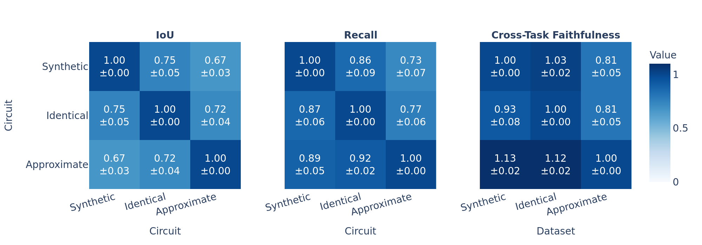
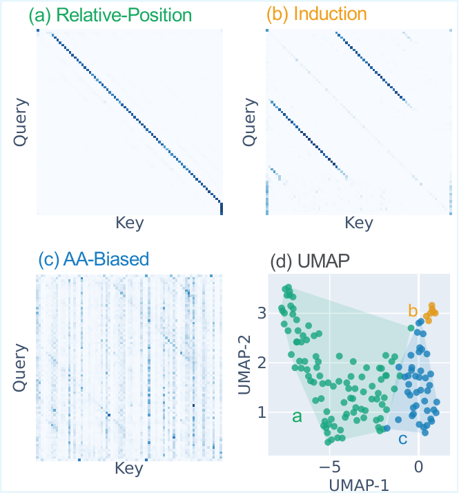
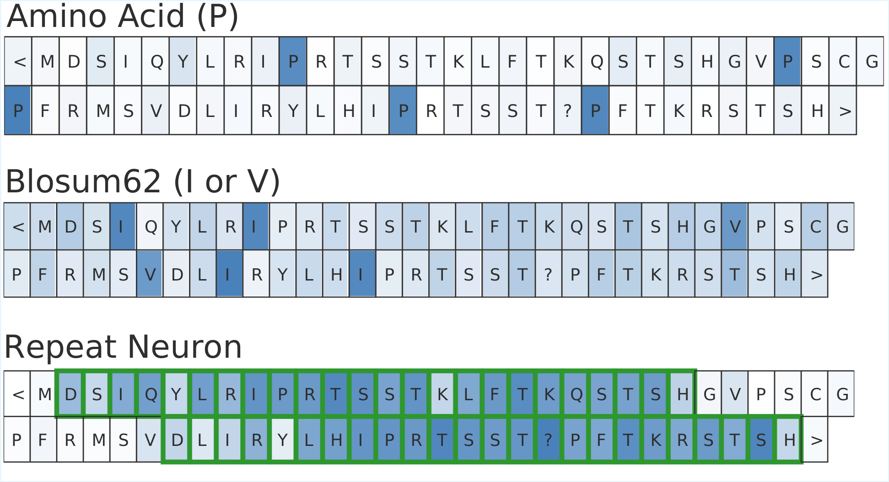
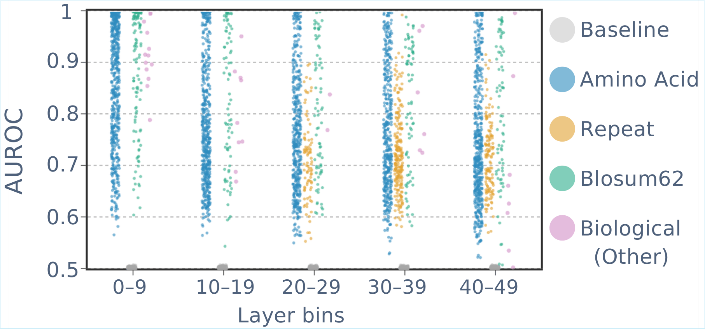

Abstract
Protein sequences are abundant in repeating segments, both as exact copies and as approximate segments with mutations. These repeats are important for protein structure and function, motivating decades of algorithmic work on repeat identification. Recent work has shown that protein language models (PLMs) identify repeats by examining their behavior in masked-token prediction. To elucidate their internal mechanisms, we investigate how PLMs detect both exact and approximate repeats.
We find that the mechanism for approximate repeats functionally subsumes that of exact repeats. We then characterize this mechanism, revealing two main stages: PLMs first build feature representations using both general positional attention heads and biologically specialized components, such as neurons that encode amino-acid similarity. Then, induction heads attend to aligned tokens across repeated segments, promoting the correct answer.
Our results reveal how PLMs solve this biological task by combining language-based pattern matching with specialized biological knowledge, thereby establishing a basis for studying more complex evolutionary processes in PLMs.
Locating a General Repeat Mechanism
- We formulate repeat identification as a masked language modeling task: the model receives a protein sequence containing a segment that appears twice (either identically or with amino-acid substitutions), one token is masked in one repeat occurrence, and the model predicts the masked amino acid using the remaining context, including information from the other repeat occurrence. We analyze ESM-3 and ESM-C.
- We locate circuits—minimal subsets of attention heads and MLPs that faithfully capture the model's behavior—for three task variants: synthetic (random sequences with two identical copies of a segment), identical (natural proteins with two exact repeat occurrences), and approximate (natural proteins where the two repeats differ by amino-acid substitutions). Using attribution patching with integrated gradients (AP-IG), we identify circuits for each variant.
- Cross-task comparison reveals that the approximate-repeat circuit generalizes both functionally, achieving high cross-task faithfulness across tasks, and structurally, with high recall indicating that it subsumes most components of the synthetic and identical circuits. Conversely, circuits discovered for synthetic or identical repeats do not fully recover performance when applied to approximate repeats. The approximate-repeat circuit thus appears to capture the broader mechanism employed across all tasks.

Which model components participate in the approximate repeats identification task?
Attention heads. We analyze attention heads in the approximate-repeat circuit. We examine their attention patterns across sample sequences and identify three recurring behaviors: induction-like heads that attend from tokens in one repeat to their aligned counterparts in the other repeat; relative-position heads that attend to fixed positional offsets along the sequence; and amino-acid–biased heads that attend to specific amino acids or groups of amino acids. To rigorously quantify these patterns, we define features for each head—induction score (pattern-matching and copying across aligned repeats), relative position (consistent attention at fixed offsets), amino acid bias (selectivity for specific amino acids), repeat focus score (sharper attention to repeat regions), attention sharpness (attention distribution concentration), boundary attention (attention to BOS/EOS tokens), head contribution (contribution to the final prediction)—and cluster heads based on these features. The resulting clusters align with the three manually identified pattern types. Relative-position heads span all layers, while induction heads and amino-acid–biased (AA-biased) heads are concentrated in middle and later layers.

MLP neurons. To locate important neurons, we rank neurons within each MLP layer in the approximate-repeat circuit using AP-IG at the neuron level, and retain the top fraction per layer. Retaining roughly 3% of neurons per layer suffices to recover most circuit faithfulness in ESM-3; ESM-C requires roughly 7%.
As an initial exploratory step, we visualize the activation patterns of high-scoring neurons. Observing these activations reveals several recurring patterns: some neurons exhibit a bias toward specific amino acids; others activate on subsets of amino acids that share similar biochemical properties or exhibit high evolutionary substitution likelihood according to BLOSUM62; and some activate more strongly within repeated segments.

To quantify these patterns, we define concepts as groups of tokens sharing a property—for example, repeat-region tokens, individual amino acids, or biochemical concepts such as BLOSUM62 substitution groups and IMGT physicochemical classes of the 20 common amino acids. For each neuron, we measure how well its activations discriminate concept tokens from non-concept tokens using AUROC, and assign it to the concept with the highest AUROC. Across all layers, neurons are most frequently matched with singleton amino-acid concepts, followed by BLOSUM62 groups and other concepts based on biochemical similarity. In mid-to-late layers, a substantial fraction of neurons are matched with the repeat-region concept.

How do the components interact to solve the task of repeat identification and prediction?
Having characterized the main component groups—induction heads, relative-position heads, AA-biased heads, and MLP neuron groups—we now explain how they interact to produce the correct prediction. We apply EAP-IG to quantify mutual influence between component groups, and use the logit lens to measure each group's direct contribution to the prediction at the masked position across layers.
Taken together, these analyses suggest a plausible computational path for repeat detection. First, relative-position heads and MLPs—primarily biochemical similarity neurons and amino acid neurons—build contextual representations that align tokens across the two repeats. Second, induction heads exploit these representations by attending from the masked position to its aligned token and copy the corresponding residue, thereby increasing the probability of the correct token. In these layers, repeat-related neurons play an inhibitory role. Finally, late MLPs driven mainly by amino acid and repetition neurons shape the output distribution, while AA-biased heads have a weaker direct contribution to the logits.

How to cite
bibliography
Gal Kesten-Pomeranz, Yaniv Nikankin, Anja Reusch, Tomer Tsaban, Ora Schueler-Furman, Yonatan Belinkov. “Induction Meets Biology: Mechanisms of Repeat Detection in Protein Language Models”.
bibtex
@misc{kestenpomeranz2026inductionmeetsbiologymechanisms,
title={Induction Meets Biology: Mechanisms of Repeat Detection in Protein Language Models},
author={Gal Kesten-Pomeranz and Yaniv Nikankin and Anja Reusch and Tomer Tsaban and Ora Schueler-Furman and Yonatan Belinkov},
year={2026},
eprint={2602.23179},
archivePrefix={arXiv},
primaryClass={cs.LG},
url={https://arxiv.org/abs/2602.23179},
}